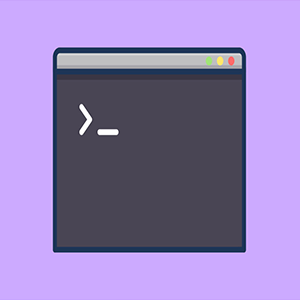
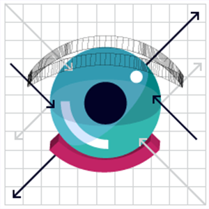

Курсы
-
Создание Telegram-бота на Java
Что это: видеоурок по созданию Telegram-бота.
Что узнаем: как создавать простейшего бота в телеграм, который будет отвечать на команды.
Когда: 13 апреля в 20:00 (МСК)Подробности
- Регистрация: https://geekbrains.ru/events/840
-
Основы интернет-маркетинга
Что это: вводный курс для тех, кто хочет составить общее представление об интернет-маркетинге. В ходе курса будут рассмотрены базовые принципы работы и компоненты системы: SEO, SMM, e-mail marketing, PR, контекстная реклама.
Подробности
- Что узнаем:
- - необходимые сервисы для работы
- - веб-аналитика
- - e-mail маркетинг
- - цифровой PR
- - SMM (маркетинг в социальных сетях)
- - SEO (поисковая оптимизация)
- - контекстная реклама
- Ссылка на курс: https://stepik.org/course/4350/
-
Вёрстка
Что это: платный трёхнедельный курс, на котором научимся верстать. После курса сможем самостоятельно сделать и запустить свой лендинг.
Подробности
- - основы вёрстки (как собирать страницу, как стилизовать с помощью CSS, адаптивность сайта для разных устройств)
- - правила вёрстки (позиционирование, формы, взаимодействие с парсерами и поисковыми системами)
- - всё о CSS
- Ссылка на курс: https://erodionov.ru/s/uqvkO
-
Основы написания макросов в Excel
Что это: курс по написанию макросов в MS Excel, с помощью которых можно экономить время и автоматически выполнять однотипные задачи.
Подробности
- - что такое макросы и как их использовать
- - как создавать макросы
- - как пользоваться макрекордером для создания макросов без знаний языка VBA
- - что такое объекты Excel и как с ними работать
- Ссылка на курс: https://loftblog.ru/material/1-znakomstvo-s-makrosami/
-
Дизайнер интерфейсов. Введение в специальность
Что это: курс для начинающих дизайнеров с уклоном на разработку сайтов и мобильных приложений.
Подробности
- - как применять законы проектирования взаимодействия с пользователем при построении структуры и логики интерфейса
- - придумывать логику простых сервисов и приложений, учитывать возможные ошибочные сценарии пользователей
- - применять простейшие законы типографики и визуального дизайна при работе над макетами экранов интерфейса
- - анализировать тренды, отличать хороший дизайн от плохого, использовать в своем дизайне современные тренды.
- Регистрация: coursera.org/learn/ux-ui-design
-

Bash: основы командной строки
Что это: курс по основам работы в командной строке в linux и macOS системах.
Подробности
- - освоим навигацию по файловой системе в bash
- - команды и способ управления деревом файлов и папок
- - как работать с программами-пейджерами
- - как работать с историей команд
- Ссылка на курс: ru.hexlet.io/courses/bash
-

Компьютерная графика: основы
Что это: обзорный курс по компьютерной графике. Обучение начнём с физических основ и далее рассмотрим форматы и основные алгоритмы сжатия компьютерной графики.
Подробности
- - не-компьютерные основы компьютерной графики
- - изучим подходы к описанию цвета и световые модели
- - какие используются форматы файлов и алгоритмы сжатия
- - как работать с графикой из командной строки
- Ссылка на курс: https://stepik.org/course/419
-
Нейронные сети
Что это: курс, на котором познакомимся с теоретическими и практическими основами искусственных нейронных сетей.
Подробности
- - что такое нейронные сети и как их применять
- - основы линейной алгебры
- - перцептрон и градиентный спуск
- - алгоритм обратного распространения ошибки
- Ссылка на курс: https://stepik.org/course/401/